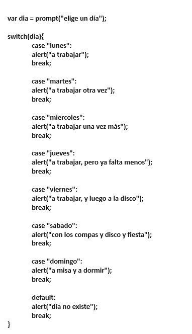

SWITCH.
practiquemos un poco más con las funciones. Vamos a agregar condicionales ahora
- Escribe una función que compare la longitud de dos cadenas de texto o strings ,si son iguales, retorna "true" y "false" si no lo son. Para esto,es bueno usar la propiedad length
- Escribe una función con un parámetro, y dentro de la función, crea un condicional que diga "es positivo" si el parámetro es mayor que cero, y que diga "es negativo" si es menor. Y si es cero, pues que diga "esto es un cero"
- escribe una función que calcule el área de un rectángulo. Puedes buscár en google cómo hacer el cálculo y lo programas.
- escribe una función que pueda diferenciar vocales de consonantes, si el usuario escribe más de una letra o un número, que diga "dato incorecto"
La estructura "switch" es similar a "if" y se construye de la siguiente manera:
- se declara la variable o parametro de la función. var variable = caso1 ó function(variable){}
- escribimos la palabra reservada "switch" seguida de paréntesis y luego llaves:
switch(variable){}
- dentro de las llaves irá el programa que se ejecutará y justo debajo, la sentencia "break;" que servirá como freno cuando el programa encuentre la coincidencia. Las coincidencias estarán dadas por los distintos "case" que irán separados del "caso" por dos puntos, así case: "coicidencia". Si el valor de la variable es "coincidencia"el programa mostrará el resultado corerspondiente.
- el caso "default" funciona como el "else" se coloca al final del programa con un mensaje de error cuando las coincidencias no existan. Con un ejemplo lo veremos mejor:
Construyamos un programa con switch que nos diga a dónde ir según el día de la seman. Declaramos la variable dia y le damos al usuario la posibilidad de elegir.
